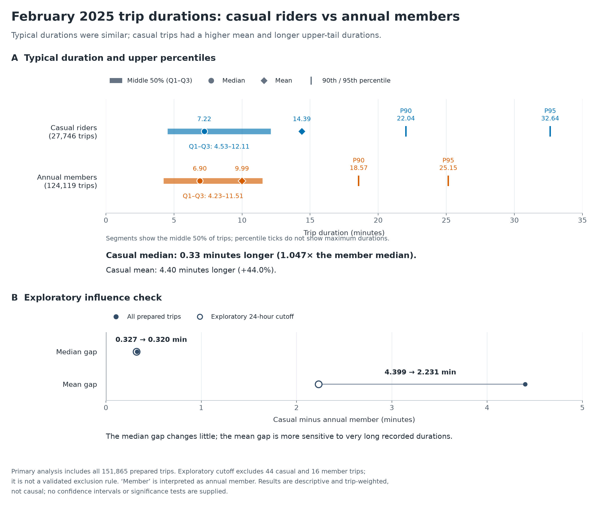

Casual riders took slightly longer typical trips than annual members in February 2025, but the difference in average duration was much larger. The analysis includes all 151,865 prepared trips: 27,746 casual trips and 124,119 member trips. “Member” is interpreted as annual membership.
| Trip-duration measure | Casual riders | Annual members |
|---|---|---|
| Median | 7.22 minutes | 6.90 minutes |
| Middle 50% of trips | 4.53–12.11 minutes | 4.23–11.51 minutes |
| Mean | 14.39 minutes | 9.99 minutes |
| 90th percentile | 22.04 minutes | 18.57 minutes |
| 95th percentile | 32.64 minutes | 25.15 minutes |
The casual median was 0.33 minutes longer, or about 4.7% above the member median. The similar middle-50% ranges indicate that typical durations were broadly comparable.
By contrast, the casual mean was 4.40 minutes longer (+44.0%). Both groups’ means exceeded their medians, indicating upper-tail influence, with a larger gap among casual trips. The higher casual 90th and 95th percentiles also show longer durations toward the upper end.
The primary results retain very long recorded trips. An exploratory cutoff excluding 44 casual and 16 member trips above 24 hours left the median gap nearly unchanged: 0.327 to 0.320 minutes. However, the mean gap fell from 4.399 to 2.231 minutes. Thus, the typical-duration comparison is relatively insensitive to these trips, while the mean difference is more sensitive. The cutoff is an influence check—not a validated rule for identifying invalid trips—and very long durations may not represent continuous riding.
Preparation excluded only 15 trips that started outside February 2025; no further exclusions were applied to the primary comparison. Results are trip-weighted, not rider-weighted, so frequent riders contribute more observations. Rider identifiers were unavailable to account for repeated trips.
These are descriptive findings without confidence intervals or significance tests. They do not establish that membership causes duration differences or that February represents other months. Trip purpose, route, weather, and rider characteristics are possible explanations, not demonstrated ones. Missing station information also limits station-level explanations.
Conclusion: Casual trips were slightly longer at the median and notably longer on average. The larger average gap reflects greater upper-tail influence, rather than a similarly large difference in typical trip duration.